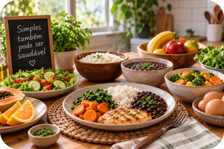

Mas alimentação saudável não precisa começar por aí.
Na verdade, ela pode começar com alimentos muito conhecidos da mesa brasileira: arroz, feijão, ovos, legumes, verduras, frutas, mandioca, batata, milho e tantas outras opções simples.
O Guia Alimentar para a População Brasileira recomenda que alimentos in natura ou minimamente processados, em grande variedade e predominantemente de origem vegetal, sejam a base da alimentação.
E existe outra boa notícia: comer melhor não significa necessariamente gastar mais.
1. Antes de procurar alimentos “saudáveis”, olhe para a comida de verdade
Uma alimentação adequada não depende de comprar produtos que tragam na embalagem palavras como “fitness”, “zero”, “proteico”, “natural”, “funcional” ou qualquer outra expressão de marketing.
O Ministério da Saúde orienta priorizar alimentos in natura ou minimamente processados.
Entre eles estão alimentos muito comuns, como arroz, feijão, milho, mandioca, batata, ovos, frutas, legumes, verduras, leite, carnes, entre muitos outros.
Alimentos minimamente processados são alimentos in natura que passaram por processos como limpeza, secagem, moagem, refrigeração, congelamento ou pasteurização, sem adição de sal, açúcar, óleos, gorduras ou outras substâncias ao alimento original.
Dica da Lu: Comece pela comida simples. Antes de procurar comida “especial”, olhe para a comida simples que já existe na sua cozinha.
2. Alimentação saudável é necessariamente mais cara?
Não.
O próprio Guia Alimentar aborda essa questão.
Segundo o Guia Alimentar do Ministério da Saúde, embora algumas frutas, verduras e legumes possam ter preços mais elevados, o custo total de uma alimentação baseada em alimentos in natura ou minimamente processados é, no Brasil, menor do que o de uma alimentação baseada em ultraprocessados.
O Guia cita alimentos tradicionais e geralmente acessíveis, como arroz, feijão, batata e mandioca, e recomenda aproveitar alimentos da safra e locais de compra onde os preços possam ser menores.
O INCA também orienta que, no contexto brasileiro, uma alimentação baseada em alimentos tradicionais como arroz, feijão, saladas e frutas pode custar menos do que uma alimentação baseada predominantemente em produtos ultraprocessados prontos para consumir ou aquecer.
Saudável não é sinônimo de caro.
Mas isso também não significa que todo alimento saudável seja barato. Preço varia conforme região, época, estabelecimento e disponibilidade.
A ideia é aprender a escolher melhor dentro da realidade de cada casa.
3. O planejamento começa antes do supermercado
Aqui entra uma coisa que fazemos muito no Mundo LuFiNas: pesquisar antes de comprar.
Antes de sair para o mercado, dê uma olhada na geladeira, no congelador, na despensa, nas frutas que ainda estão em casa, nos legumes que precisam ser usados e no que sobrou das refeições anteriores.
Depois pense aproximadamente nas refeições dos próximos dias. Não precisa montar um cardápio digno de restaurante.
A pergunta pode ser simplesmente: “O que conseguimos preparar esta semana com o que já temos?”
O Ministério da Saúde recomenda planejar as compras, organizar a despensa e, quando possível, definir previamente as refeições. Também orienta utilizar uma lista para evitar comprar mais do que o necessário.
Método Mundo LuFiNas
4. Aproveite os alimentos da safra
Frutas, verduras e legumes não custam a mesma coisa durante o ano inteiro.
Quando determinado alimento está na época de maior oferta, pode ser encontrado por preços mais interessantes.
O Guia Alimentar recomenda dar preferência, quando possível, a legumes, verduras e frutas produzidos localmente e que estejam na safra.
O INCA também aponta os alimentos da safra como uma das estratégias para economizar nas compras.
Então talvez seja melhor inverter a pergunta. Em vez de chegar ao mercado pensando “Hoje preciso comprar exatamente esta fruta”, experimente olhar: “Qual fruta está bonita e com preço melhor esta semana?”
A alimentação continua variada e você ganha liberdade para adaptar a compra ao orçamento.
5. Compare lugares, não apenas produtos
O supermercado não é a única possibilidade.
Dependendo de onde você mora, pode valer a pena comparar preços em feiras livres, sacolões, varejões, mercados de bairro, supermercados, produtores locais e outros pontos de venda.
O INCA recomenda considerar locais com menos intermediários entre produtor e consumidor, como feiras, sacolões e varejões, pois isso pode contribuir para encontrar alimentos por preços mais acessíveis.
Isso não significa que um tipo de estabelecimento será sempre mais barato. Significa apenas: compare antes de criar o hábito de comprar tudo no mesmo lugar.

6. Arroz e feijão continuam sendo nossos amigos
Às vezes, na busca por uma alimentação considerada “mais saudável”, acabamos desprezando alimentos tradicionais que sempre estiveram na mesa brasileira.
Não precisa ser assim.
O Guia Alimentar apresenta combinações tradicionais brasileiras, incluindo arroz com feijão, dentro de padrões de refeições baseados em alimentos in natura ou minimamente processados e preparações culinárias.
A alimentação saudável não precisa parecer estrangeira. Ela pode ter arroz, feijão, legumes, verduras, ovos, carnes, raízes, frutas e preparações que fazem parte da cultura da própria família.
E isso tem tudo a ver com vida prática.
7. Use melhor aquilo que você compra
Não adianta encontrar uma promoção maravilhosa de verduras e comprar uma quantidade que a família não conseguirá consumir.
O barato pode deixar de ser barato quando o alimento acaba indo para o lixo.
Por isso, antes de comprar em grande quantidade, pense: vamos realmente consumir isso? Quanto tempo esse alimento costuma durar aqui em casa? Posso utilizar em mais de uma preparação? Posso armazenar adequadamente?
Comprar conscientemente também significa considerar o consumo real da casa.
8. Um ingrediente pode participar de várias refeições
Planejamento não significa comer exatamente a mesma coisa todos os dias. Significa aproveitar melhor os ingredientes.
Um legume comprado para determinada refeição pode aparecer depois em outra preparação.
Alimentos já cozidos podem, quando armazenados e reaproveitados adequadamente, facilitar outra refeição.
Frutas maduras podem ser incorporadas a preparações em vez de serem simplesmente descartadas.
Aproveitar melhor não é consumir alimento estragado.
Segurança dos alimentos vem sempre primeiro. Mas organizar as refeições ajuda a perceber o que precisa ser consumido antes.
9. Cuidado com a compra por impulso
Supermercado também é comércio.
Embalagens chamativas, promoções, produtos colocados em locais estratégicos e ofertas aparentemente imperdíveis podem estimular compras que não estavam planejadas.
Por isso a lista é tão útil.
Antes de colocar algo no carrinho, vale perguntar: “Eu preciso disso ou só fiquei com vontade porque vi?”
Não existe problema em comprar algo por prazer. A diferença é fazer isso conscientemente.
10. Cozinhar também pode ser uma ferramenta de economia
Preparar parte das refeições em casa permite escolher os ingredientes utilizados e pode facilitar o planejamento das refeições e das compras.
O INCA inclusive sugere levar comida preparada em casa para o trabalho e estimular a participação da família no preparo das refeições como estratégias relacionadas à alimentação saudável e à economia.
Quando possível, dividir o preparo também pode tornar a rotina mais leve: cozinhar não precisa ser uma obrigação de uma pessoa só.
Quando possível, a família pode participar. Um lava. Outro corta. Outro organiza. Outro prepara. E alguém certamente aparece apenas na hora de comer. 😂
Preciso comprar produtos caros para começar?
Não.
Você não precisa reformar a despensa inteira. Não precisa jogar fora tudo o que tem. E não precisa voltar do mercado com quinze produtos diferentes porque decidiu “começar uma alimentação saudável”.
Comece pelo básico: mais planejamento e melhores escolhas dentro da sua própria realidade.
Checklist da Lu
☑ Olhe o que já tem
☑ Planeje algumas refeições
☑ Faça uma lista
☑ Veja o que está na safra
☑ Compare os preços
☑ Compre o que realmente vai usar
Dica da Lu: Comer melhor também passa por aproveitar melhor. Comer melhor não começa colocando mais coisas no carrinho. Muitas vezes começa aproveitando melhor aquilo que já compramos.
Para terminar...
Alimentação saudável não precisa significar uma despensa cheia de produtos caros.
Pode começar com algo muito mais simples: olhar o que existe em casa, planejar algumas refeições, valorizar alimentos tradicionais, aproveitar produtos da safra, comparar preços, cozinhar quando possível e comprar apenas aquilo que realmente será utilizado.
No Mundo LuFiNas, a proposta não é dizer o que cada pessoa tem que comer, e sim reunir informações confiáveis que ajudem em escolhas mais conscientes.
Também na alimentação vale a ideia que orienta o Mundo LuFiNas: A gente pesquisa. Você escolhe melhor.
Fontes consultadas
Ministério da Saúde — Guia Alimentar para a População Brasileira. Principal referência oficial utilizada nesta matéria. O documento orienta que alimentos in natura ou minimamente processados sejam a base da alimentação e aborda também custo, planejamento, habilidades culinárias, tempo e outros aspectos da vida cotidiana.
Guia Alimentar para a População Brasileira — Ministério da Saúde
Instituto Nacional de Câncer (INCA) — Como ter uma alimentação saudável, economizando nas compras. Material com orientações sobre alimentos da safra, locais de compra, preparo doméstico e economia.